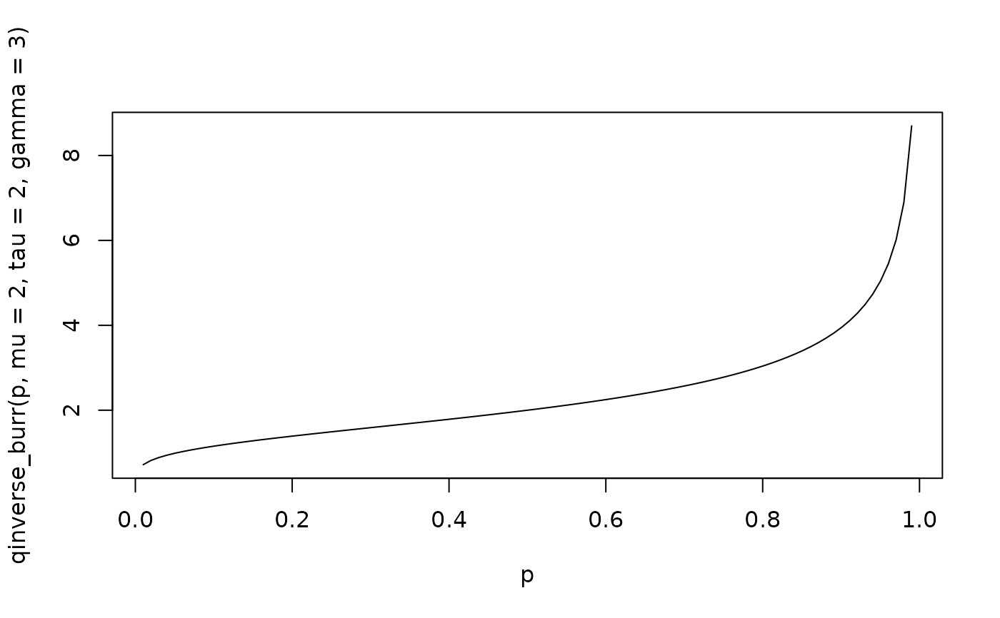

Quantile function for the Inverse Burr distribution, with Median
parametrization.
Usage
qinverse_burr(p, mu, tau, gamma)
Arguments
- p
Quantile to be calculated, p e (0, 1)
- mu
Median parameter of pdf, mu > 0
- tau
Shape1 parameter of pdf, tau > 0 (actuar: shape1)
- gamma
Shape2 parameter of pdf, gamma > 0 (actuar: shape2)
Value
Inverse of CDF, calculates a value, given a probability p
Details
Define the scale parameter sigma as
$$\sigma(\mu, \tau, \gamma) := \mu \cdot (2^{1/\tau} - 1)^{1/\gamma}$$
$$Q(p | \mu, \tau, \gamma) = \sigma \cdot (\frac{p^{1/\tau}}{1 - p^{1/\tau}})^{1/\gamma}$$
Examples
p <- seq(from = 0.01, to = 0.99, length.out = 100)
plot(p, qinverse_burr(p, mu = 2, tau = 2, gamma = 3), type = "l")
